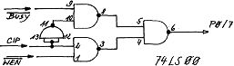
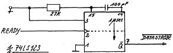

80-Bus Journal |
Mai 1983 · Ausgabe 5 |
Copyright 1983
by Tom D. Rüdebusch
__________ ___ __
____ Giessen
Tel. ____/_____
Dieses Programm wurde zur Steuerung des Philips-MDCR-Laufwerkes erstellt. Es arbeitet mit Nas-Sys 1 oder Nas-Sys 3 und stellt deren Editiermöglichkeiten zur Verfügung. Als Interface kann das von Johannes Lotter verwendet werden, das WEN-Signal wird jedoch an Port 0 (Input)/Bit 7 abgefragt. Außerdem werden 2 KByte Speicher für das Programm und knapp 1 KByte für den Workspace benötigt.
Speicherbelegung | |||||
| Workspace | : | 443EH – 4800H | |||
| Programm | : | 4800H – 5000H | |||
| Drucker-UP | : | 4FDEH | |||
| Start | (initialisiert Nas-Sys) | : | 4800H | ||
| " | (keine Initialisierung) | : | 4809H | ||
Wird der Quelltext auf einer „ganzen“ Adresse assembliert und das ganze im EPROM abgelegt, so meldet sich der Tape Controller bei entsprechender Einstellung der Schalter auf der Nascom 2-Platine direkt nach RESET. Das Programm zeichnet sich durch einige Besonderheiten aus:
1. Der Kopf des Recorders bleibt bei der aktuellen Position stehen, die im Arbeitsspeicher festgehalten wird. Dadurch lassen sich unnötige Spulzeiten vermeiden.
2. Um ein Reissen des Bandes möglichst auszuschließen, wird nur bei einem Neueintrag in das Inhaltsverzeichnis ganz an den Anfang der Cassette zurückgespult, ansonsten stoppt das Laufwerk kurz vor Erreichen des Anschlages.
3. Es wird nicht in 1 KByte-Blöcken aufgezeichnet, sondern byteweise, d. h. nur die wirkliche Filelänge. Diese Aufzeichnungsmethode ist nicht kompatibel zu UNICON 1.4.
4. Die Directory steht im Workspace, kann also immer eingesehen werden, ohne daß deshalb gespult werden muß. Dieses Inhaltsverzeichnis ist durch eine Prüfsumme abgesichert; sollte also ein abgestürztes Programm den Arbeitsspeicher verändert haben, so liest der Controller automatisch das korrekte Verzeichnis von Cassette ein.
5. Es handelt sich ausschließlich um ein Steuerprogramm für das Mini-Laufwerk und ist nach dem Verlassen vollständig abgeschaltet.
6. Leistungsfähige Kommandos, ausführliche Fehlermeldungen und Absicherung der Files erhöhen Bedienkomfort und Datensicherheit.
7. Schließlich liegt bei 4FDEH noch ein Unterprogramm, das einen parallelen Drucker über Port A treibt, das auf Output programmiert wird. Die BUSY-Leitung des Druckers wird wie das WEN-Signal über Port 0 abgefragt; dies ermöglicht ein automatischer Umschalter:
Das DATA STROBE-Signal für den Drucker wird durch den READY-Impuls von Port A wie folgt erzeugt:
So lassen sich mit einer PIO Drucker und Mini-Laufwerk ansteuern. Zu beachten ist, daß beim Drucken keine Cassette eingelegt ist (es genügt auch Öffnen der Klappe).
Das „Ü“-Zeichen zeigt an, daß der Tape Controller auf Kommandos wartet. Da das Programm über eine Befehlsvervollständigung verfügt, muß jeweils nur das erste Zeichen eingegeben werden. Filenamen können maximal 14 Zeichen lang sein und durch „Ü = eckige Klammer r.“ abgekürzt werden. Die Trennung des Namens von den Adressen sollte grundsätzlich durch genau ein Leerzeichen erfolgen. Beim Schreiben und Lesen sind die laufenden Bytes als ASCII-Zeichen in der rechten, oberen Bildschirmecke sichtbar. Es folgt eine Beschreibung der Befehle im einzelnen.
1. QUIT Rücksprung in den Monitor.
2. FORMAT
Eine neue Cassette wird formatiert, auf die Frage „Sure (Y)?“
ist „Y“ einzugeben, wenn es sich wirklich um eine
unbeschriebene Cassette handelt, da sonst alle eventuell vorhandenen
Files gelöscht werden.
3. INITIALISE
Dieses Kommando sollte man unbedingt ausführen lassen, wenn die
Cassette gewechselt wurde. Der Controller holt sich das neue
Inhaltsverzeichnis von Cassette und gibt es auf dem Bildschirm aus.
4. REWIND
Dieser Befehl dient zum Rückspulen des Bandes. Vor jedem Entfernen der
Cassette sollte man sicherheitshalber „R“ eintippen, da –
falls der Kopf schon in Position 0 steht – nicht gespult wird und man
sich sofort wieder im Kommando-Modus befindet.
5. DIRECTORY
Das Inhaltsverzeichnis wird auf dem Schirm ausgegeben. Sollten auf der
Cassette mehr als 11 Files abgespeichert sein, wird die Ausgabe nach
dem 11. File unterbrochen. Die Eingabe von „ESC“ bewirkt
Rückkehr in den Kommando-Modus, jede andere Taste setzt das Auslisten
der Directory fort.
6. SAVE
Nach Eingabe dieses Befehles wird der Benutzer aufgefordert, Anfangs-,
End- und Startadresse sowie den Filenamen anzugeben. Einfache Eingabe
von „Ä = eckige Klammer l.“ und des Filenamens direkt danach
bewirkt automatisches Eintragen der aktuellen Adressen für ein
Basic-Programm. Dies erspart umständliches Aus- und Umrechnen.
Das Programm wird nun auf Band geschrieben und von dort aus noch einmal mit dem entsprechenden Speicherbereich verglichen, wodurch ein zusätzlicher „Verify“-Befehl entfallen kann. Anschließend erfolgt ein Eintrag in die
| Seite 24 von 28 |
|---|